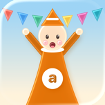
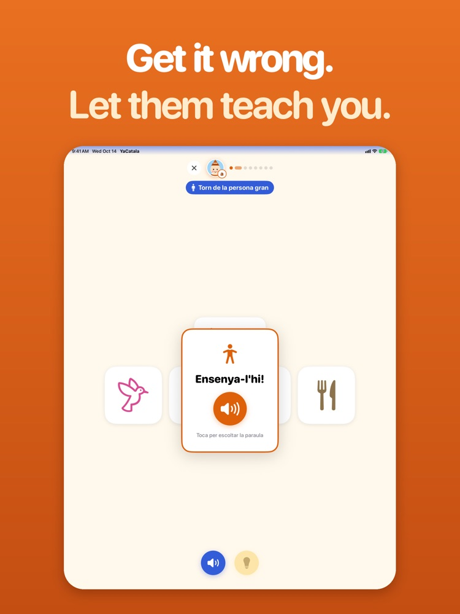
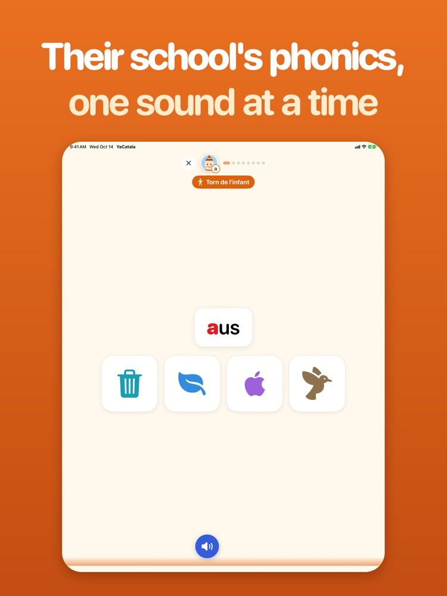
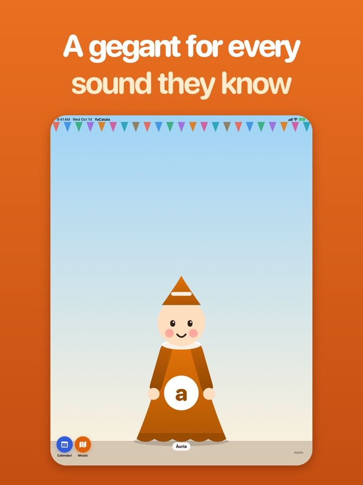
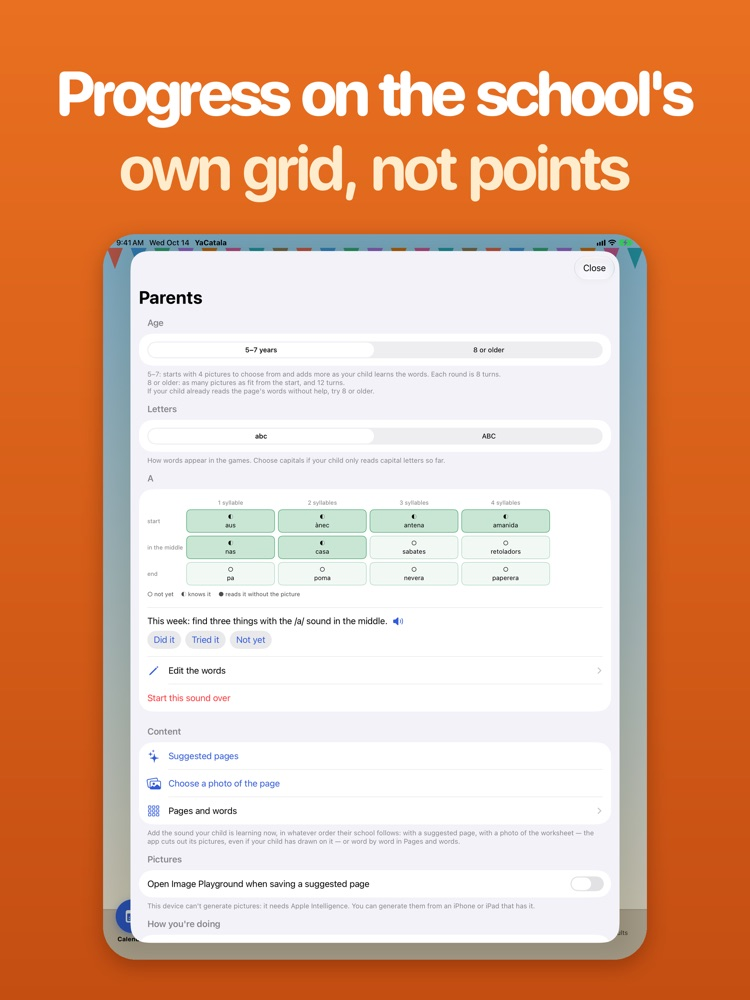

Your child is learning to read in Catalan at school, and you don't speak it either. YaCatala turns that into the game — you play alongside them, and they teach you.




One sound per page, twelve words arranged by where the sound falls and how many syllables they have — the same week your child meets it in class.
Take turns on the same words. When the grown-up misses, the child gets the "Ensenya-l'hi!" moment and teaches it.
Find the picture for a word, hear the odd one out, and tap the drum once for every syllable. A few minutes a day.
Each week, go and find three things with the sound — at home or out and about. The game ends outside the app.
Photograph a page of your child's worksheet, or start from a suggested page for any sound. Image Playground can draw missing pictures.
No ads, no accounts, no streaks to lose. Progress is shown on the school's own grid, not points — and it never leaves your device.
Designed for iPad, also on iPhone. Parent screens in English, Spanish or Catalan.